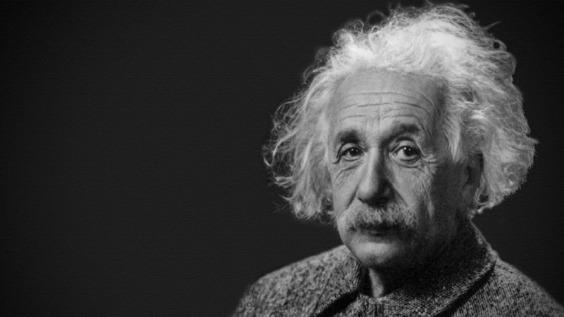

Como funciona a Teoria da Relatividade Geral e a Restrita
A Teoria da Relatividade Geral é uma teoria geométrica da gravitação, a teoria da Relatividade Geral é representada por conjuntos de hipóteses que generalizam a lei da gravitação universal e a teoria da relatividade restrita.

Lei da Gravitação Universal
A Gravitação Universal é uma lei que afirma que se dois corpos possuem massa, eles sofrem a ação de uma força atrativa proporcional às suas massas e inversamente proporcional ao quadrado da distância que separa seus centros de gravidade.
A gravidade é uma força fundamental de atração da natureza que age entre os objetos por causa de suas massas. A gravidade mantém os objetos celestes unidos e ligados, como os gases quentes contidos pelo Sol e os planetas, confinados às suas órbitas.
Teoria da Relatividade Restrita
A Teoria da Relatividade Restrita tem como base descrever o movimento de campos eletromagnético na ausência de campos gravitacionais. Resumindo, a teoria da relatividade restrita tem como base dois postulados:
1° A velocidade de propagação da luz no vácuo é a mesma em todos os sistemas de referência.
2° Todas as leis da natureza são as mesmas em todos os sistemas de referência.
A Relatividade Restrita também modificou a noção de energia. A energia pode ser convertida em massa e esta passou a ser considerada uma forma de energia. Este princípio é chamado de equivalência massa-energia e pode ser expresso pela fórmula:
E = mc²
E = energia de repouso
m = massa
c = velocidade da luz
A equivalência massa-energia é facilmente verificada nas reações nucleares, onde núcleos e partículas converte massa em energia e vice-versa.
Teoria da Relatividade Geral
A Teoria da Relatividade Geral descreve os movimentos de objetos não mais como ação de forças, mas sim como trajetórias sobre a superfície do espaço-tempo.
A teoria é basicamente a presença de matéria que encurva o espaço-tempo. Assim, quanto maior for a massa do corpo, mais ele encurva o espaço-tempo ao seu redor.
Resumindo, a matéria diz ao espaço como se curva e a curva do espaço diz a matéria como ela tem que se mover.
Com a Relatividade Geral, Einstein fez diversas previsões em experimentos, como explicar o comportamento anômalo da órbita de Mercúrio, algo que nem mesmo a física newtoniana não era capaz de fazer.
Foi previsto também que a medida do tempo também sofreria a influência dos campos gravitacionais. Quanto mais intenso o campo, mais lentamente passaria o tempo.
Albert Einstein
Albert Einstein (1879-1955) foi um físico teórico alemão, nascido na cidade de Ulm. Albert Einstein desenvolveu a teoria da relatividade geral, um dos pilares da física moderna ao lado da mecânica quântica. Embora ele seja mais conhecido por sua fórmula de equivalência massa-energia, E = mc².
Em 1921 Einstein foi premiado com o Pr√™mio Nobel de F√≠sica por suas contribui√ß√µes na f√≠sica te√≥rica e, especialmente, por sua descoberta da lei do efeito fotoel√©trico, que foi fundamental no estabelecimento da teoria qu√¢ntica üîó.